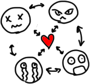

Дифференциальная геометрия
Содержание
Лекция 1. Разные геометрии
Евклидово пространство
\(\mathbb{R}^n\)
Сферическая геометрия на сфере
\(S^2\)
в
\(\mathbb{R}^n\)
Проективная плоскость
\(\mathbb{R}P^2\)
Псевдоевклидово пространство
\(\mathbb{R}^q_p\)
Пространство-время
Псевдосфера
Геометрия Лобачевского
Модель на гиперболоиде в пространстве Минковского
Конформно-евклидова модель, модель Пуанкаре
Лекция 2. Координаты
Стереографическая проекция сферы
Куда переходит большие окружности?
(Псевдостреографическая проекция плоскости Лобачевского)
Криволинейные координаты в области
Критерий регулярности координат
Различные координаты
Полярные координаты
Цилиндрические координаты
Сферические координаты
Лекция 3
Кривые
Координатные линии
Пример
Поверхности
Локальная поверхность
\(n\)
-мерное подмногообразие
Примеры подмногообразий
Кривые на подмногообразиях
Касательные векторы к подмногообразиям
Лекция 4
Длина кривой
Римановы метрики
Что такое гладко зависит?
Примеры Римановых метрик
Цилиндр с цилиндрическими координатами
Сфера с сферическими координатами
Сфера со стереографической проекцией
Метрика Лобачевского
Лекция 5
Индуцированная Риманова метрика
Изометрия многообразий
Что происходит с касательным пространством при диффеоморфизме?
Примеры изометрий
Накручиваем плоскость на цилиндр
Группа изометрий на себя различных многообразий
Группа изометрий евклидова пространства
\(\mathbb{R}^n\)
Группа изометрий сферы
\(S^{n - 1}\)
Группа изометрий плоскости Лобачевского
Лекция 6
Плоские кривые в
\(\mathbb{R}^n\)
Регулярные несамопересекающиеся кривые в евклидовом пространстве
Уравнение касательной
Формулы Френе
Лекция 7
Перейдем в
\(\mathbb{R}^3\)
Формулы Френе для
\(\mathbb{R}^n\)
Геометрический смысл кручения
Теорема о восстановлении кривой по кривизне и кручению
Как найти
\(v, n, b, k, \varkappa\)
для кривой заданной параметрически?
Внешняя геометрия поверхностей